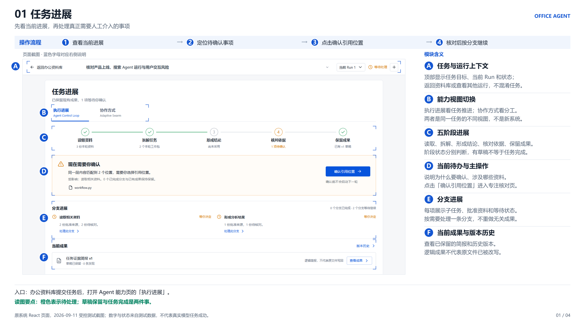
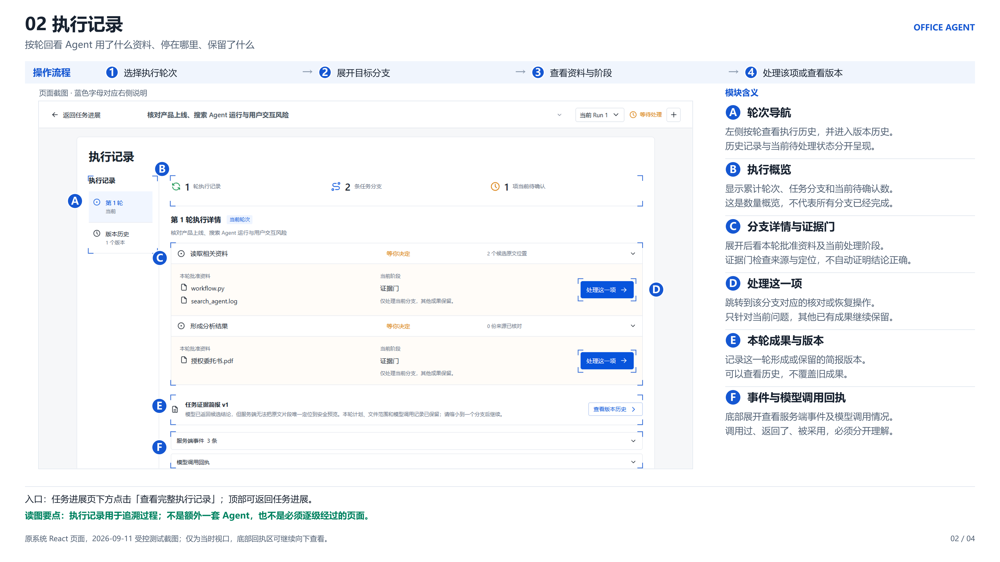
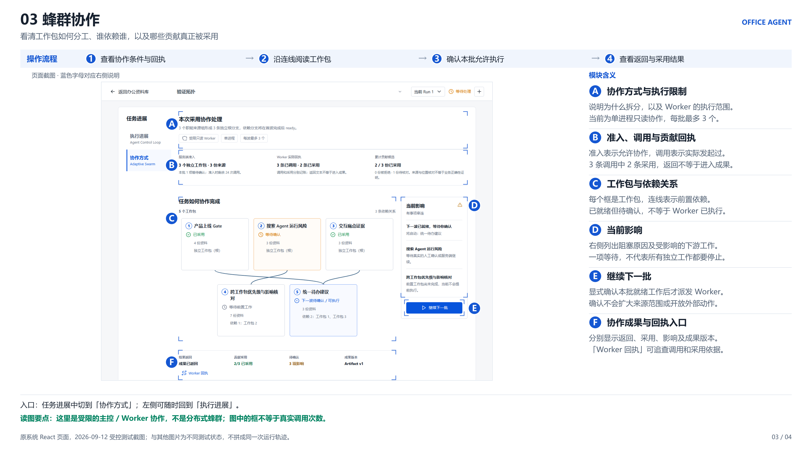
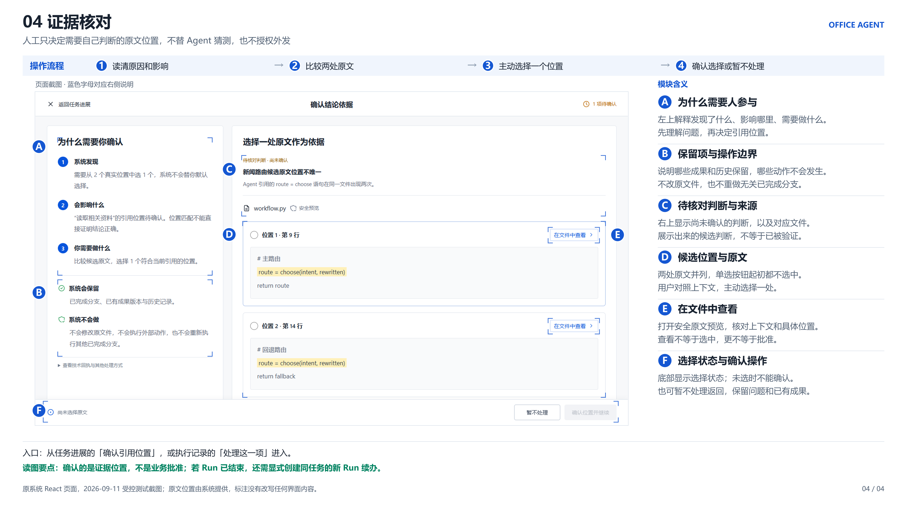

<!doctype html><html lang="zh-CN"><meta charset="UTF-8"><meta name="viewport" content="width=device-width,initial-scale=1"><title>Office Agent 系统演示图片</title><style>*{box-sizing:border-box}body{margin:0;background:#f4f6f9;color:#182230;font:16px "Microsoft YaHei",Arial,sans-serif}header{background:white;border-bottom:1px solid #dce3ec;padding:28px 4%}h1{font-size:26px;margin:0 0 12px}p{color:#526174;margin:0;line-height:1.7}main{max-width:1680px;margin:24px auto;padding:0 24px}section{margin-bottom:32px}h2{font-size:20px}img{display:block;width:100%;height:auto;border:1px solid #dce3ec}a{color:#1557d2}footer{padding:24px 4%;color:#526174}</style><header><h1>Office Agent 系统演示图片</h1><p>原系统四个视图的操作与模块说明，3840 × 2160 PNG。<a href="系统演示图片-4张.zip">下载四图压缩包</a></p></header><main><section><h2>01 任务进展</h2><a href="images/01-任务进展-操作与模块标注.png"></a></section>
<section><h2>02 执行记录</h2><a href="images/02-执行记录-操作与模块标注.png"></a></section>
<section><h2>03 蜂群协作</h2><a href="images/03-蜂群协作-操作与模块标注.png"></a></section>
<section><h2>04 证据核对</h2><a href="images/04-证据核对-操作与模块标注.png"></a></section></main><footer>原截图为 2026-09-11 / 12 受控测试状态，未用生成模型重绘。四个视图不是四个独立系统，也不组成同一次模型运行。</footer></html>